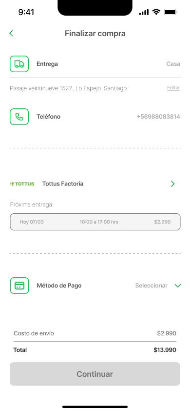

Mobile
Checkout
Desafío técnico
Fazil App
Rediseño del checkout para el desafío técnico de Fazil App (Tottus) — carrito, edición y finalización de compra optimizados para conversión.
Diseño UX/UI Cristián Acuña
Contexto Desafío técnico · Tottus

